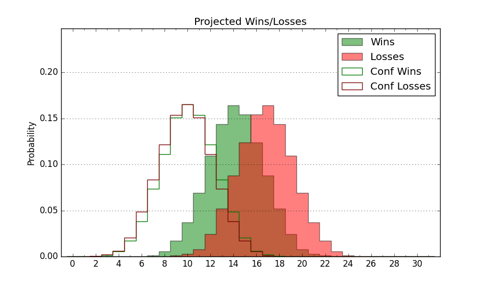

| Home | Game Probabilities | Conferences | Preseason Predictions | Odds Charts | NCAA Tournament |
| City: | Loudonville, New York | |
| Conference: | Metro Atlantic (4th)
| |
| Record: | 1-1 (Conf) 5-7 (Overall) | |
| Ratings: | Comp.: -11.0 (287th) Net: -9.4 (271st) Off: 98.5 (281st) Def: 107.9 (220th) SoR: 0.0 (198th) |
| Remaining | ||||||
|---|---|---|---|---|---|---|
| Date | Opponent | Win Prob | Pred. | |||
| 12/30 | @ Cornell (109) | 9.5% | L 65-81 | |||
| 1/3 | Manhattan (274) | 62.7% | W 73-69 | |||
| 1/5 | Iona (312) | 71.6% | W 69-63 | |||
| 1/10 | @ Quinnipiac (243) | 27.4% | L 65-72 | |||
| 1/16 | Sacred Heart (286) | 64.9% | W 71-67 | |||
| 1/18 | @ Merrimack (190) | 20.5% | L 57-66 | |||
| 1/23 | Mount St. Mary's (241) | 56.1% | W 67-66 | |||
| 1/25 | @ Iona (312) | 42.6% | L 65-67 | |||
| 1/31 | @ Marist (242) | 27.3% | L 59-66 | |||
| 2/2 | Quinnipiac (243) | 56.2% | W 70-68 | |||
| 2/6 | Saint Peter's (226) | 53.0% | W 62-61 | |||
| 2/8 | @ Rider (317) | 44.1% | L 63-64 | |||
| 2/14 | Marist (242) | 56.1% | W 63-62 | |||
| 2/16 | @ Sacred Heart (286) | 35.1% | L 67-71 | |||
| 2/21 | Niagara (338) | 77.7% | W 70-62 | |||
| 2/23 | Canisius (358) | 86.6% | W 74-62 | |||
| 3/2 | @ Mount St. Mary's (241) | 27.3% | L 63-70 | |||
| 3/6 | Fairfield (321) | 74.2% | W 73-66 | |||
| 3/8 | @ Manhattan (274) | 33.1% | L 69-73 | |||
| Previous | Game Score | |||||
| Date | Opponent | Win Prob | Result | Off | Def | Net |
| 11/4 | Brown (141) | 35.5% | W 72-71 | -3.3 | 4.6 | 1.3 |
| 11/8 | @Bryant (142) | 14.0% | W 90-88 | 11.1 | 6.3 | 17.5 |
| 11/12 | American (250) | 58.3% | W 74-66 | 20.9 | -4.4 | 16.5 |
| 11/16 | @Albany (247) | 28.6% | L 60-70 | -12.5 | 3.3 | -9.2 |
| 11/20 | @Xavier (64) | 4.2% | L 55-80 | -4.0 | 7.4 | 3.4 |
| 11/25 | (N) Miami OH (221) | 37.0% | L 58-70 | -12.0 | -0.8 | -12.8 |
| 11/26 | (N) Jacksonville (207) | 34.6% | L 64-75 | -2.5 | -7.9 | -10.4 |
| 11/30 | (N) Bucknell (223) | 37.2% | W 71-58 | 17.8 | 7.8 | 25.6 |
| 12/6 | @Niagara (338) | 50.6% | L 68-69 | 8.1 | -10.8 | -2.6 |
| 12/8 | @Canisius (358) | 65.4% | W 66-53 | 2.6 | 13.4 | 16.0 |
| 12/17 | St. Bonaventure (73) | 16.3% | L 48-65 | -17.7 | 8.6 | -9.1 |
| 12/20 | Holy Cross (289) | 65.4% | L 70-78 | 7.6 | -21.0 | -13.4 |
| Stats & Trends | |||||
|---|---|---|---|---|---|
| Current | Day | Week | Month | Season | |
| Composite | -11.0 | -0.1 | -0.8 | +2.9 | +6.3 |
| Comp Rank | 287 | -6 | -13 | +26 | +56 |
| Net Efficiency | -9.4 | -0.1 | -1.9 | -0.6 | -- |
| Net Rank | 271 | -2 | -24 | -16 | -- |
| Off Efficiency | 98.5 | +0.1 | -0.8 | -0.3 | -- |
| Off Rank | 281 | -4 | -26 | -34 | -- |
| Def Efficiency | 107.9 | -0.2 | -1.1 | -0.2 | -- |
| Def Rank | 220 | -5 | -9 | +11 | -- |
| SoS Rank | 305 | -4 | -3 | -127 | -- |
| Exp. Wins | 14.2 | -0.2 | -1.7 | +0.0 | +4.1 |
| Exp. Conf Wins | 10.1 | -0.2 | -0.8 | +0.6 | +2.7 |
| Conf Champ Prob | 3.5 | -1.3 | -5.2 | -0.7 | +2.3 |

| Advanced Stats | ||
|---|---|---|
| Stat | Value | Rank |
| Off Eff FG % | 0.464 | 301 |
| Off Ast Ratio | 0.121 | 309 |
| Off ORB% | 0.287 | 174 |
| Off TO Rate | 0.164 | 269 |
| Off FT Ratio | 0.350 | 141 |
| Def Eff FG % | 0.517 | 198 |
| Def Ast Ratio | 0.147 | 187 |
| Def ORB% | 0.321 | 285 |
| Def TO Rate | 0.146 | 200 |
| Def FT Ratio | 0.359 | 237 |